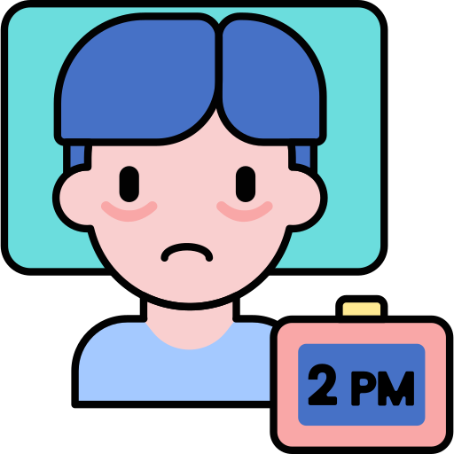

Our mental health is dynamic.
Our mental health fluctuates as our life changes. We all have times when we feel down, stressed, or angry, and most times these feelings pass. Sometimes, they develop into complex mental health problems.
|
|
Distress occurs when we cannot cope with chronic stress in a positive way, for whatever reason. This “can result in serious health conditions including anxiety, insomnia, muscle pain, high blood pressure and a weakened immune system”, according to the American Psychology Association. Distress can be the start of a mental illness, like depression. Depression is, according to the World Health Organisation, “a common mental disorder characterised by persistent sadness and a loss of interest in activities you normally enjoy, accompanied by an inability to carry out daily activities for at least 2 weeks”. Depression is an extremely serious disease with a chemical signature, that can prevent joy and weaken relationships; it is as real as any other illness.
|
How do mental health problems affect us?
Mental health problems can manifest in many different symptoms and signs. If our feelings or thoughts stop us from living our life normally, have a big impact on those around us, or affect our mood over a long period of time, we should see these as red flags.
At work, this can manifest by being more tired than usual, making several unusual mistakes, and difficulty focusing, with motivation and keeping plans. We may become thin-skinned, isolate ourselves, avoid colleagues and friends, or appear absent-minded.
|

|
|

|
Warning signs:
- Change in sleep patterns (waking up much earlier or later than usual)
- Emotional numbness, feeling absent-minded
- Loss of appetite
- Increased drug and/or alcohol consumption
- Feelings of guilt, grief or worthlessness
- Feeling like everything we try to do is exhausting
- Looking dishevelled
- Joking about suicide
These warning signs are just indications- always seek the help of specialists to understand your mental health status.
|
Knowing your mental health status.
The best way to know your mental health status is by consulting a doctor or a psychologist. If you are curious, there are online resources that can help identify a first indication:
-
This survey by the Mental Health Organisation (UK) helps you understand your level of positive mental health and coping ability.
-
This survey is used by professionals and measures the severity of depression (results starting from “these ups and downs are normal” to several severities of depression).
|

|
Help is coming!
If you would like to contact the counselor (and get an appointment for free!!) click the link below.
Learn more
Next up:
Harassment - not a normal form of stress.